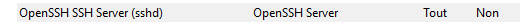

Administration des systèmes - Situation 1 – Solution d'aministration sécurisé à distance d'un serveur Windows - SSH et RDP
Contexte : CUB
Réalisé par : Lucien BESCOS
Date de réalisation : 18/10/2025

Sommaire
- Question 1 : Sysprep Windows 2019
- Question 2 : Changer le nom du serveur
- Question 3 : Modifier le mot de passe administrateur
- Question 4 : Modifier le VLAN et l'adresse IP
- Question 5 : Connexion sécurisée via SSH
- Question 6 : Accès distant via OpenSSH
- Question 7 : Sécurité SSH
- Question 8 : Création d'un utilisateur
- Question 9 : Tester SSH et interdire administrateur
- Question 10 : Modifier port SSH et pare-feu
- Question 11 : Procédure disponible
- Question 12 : Accès distant RDP
- Question 13 : Sécurité RDP
Question 1 : Réaliser un « sysprep » afin de réinitialiser le SID de l'OS Windows 2019
- Se rendre dans
Disque local/Windows/System32/Sysprep
- Exécuter le fichier « sysprep »
- Vérifier dans l’invite de commande:
Question 2 : Changer le nom de votre serveur : SeveurPrimaireX (X=1 pour l'étudiant 1, etc.)
- Dans le menu « Serveur local », cliquer sur le nom du serveur d’origine.
- Nouveau nom :
SeveurPrimaire8→ faireOK.
Question 3 : Modifier le mot de passe du compte administrateur local
- Aller dans les paramètres du compte local admin → section « mot de passe » → cliquer sur « modifier »
- Nouveau mot de passe :
Question 4 : Modifier le VLAN et l'adresse IP de votre serveur : 192.168.Y.X
- Cliquer sur l’IP par défaut
- Clic droit sur « Ethernet » → Propriété → IPV4
Configurations réseau :
- Lucien : 4.1
- Hugo : 4.51
Résultats ping depuis la machine cliente Windows :
- Serveur Lucien
- Serveur Hugo
Resultats et test Résultats ping de la machine cliente Windows vers les serveurs
- Serveur Lucien
- Serveur Hugo
Question 5 : Rédiger la procédure d'installation de la connexion sécurisée à distance via SSH
- Procédure réalisée et disponible.
Question 6 : Installer et tester l'accès à distance au serveur Windows2019 via OpenSSH
- Ne pas oublier de changer le port par 222 avec :
Question 7 : En quoi SSH assure l’intégrité des communications
- SSH chiffre les données échangées, empêchant l’interception ou la modification par des tiers.
- Première connexion SSH demande "yes/no" pour valider la clé publique du serveur afin d’éviter les attaques « man-in-the-middle ».
Question 8 : Créer un nouvel utilisateur sous Windows 2019
- Nom :
adminssh - Mot de passe :
Cub_Admin_Ssh_007
Question 9 : Tester SSH pour ce nouvel utilisateur et interdire administrateur
- Tester la connexion SSH pour
adminssh - Interdire la connexion SSH pour l’utilisateur
administrateur.
Question 10 : Modifier le port SSH et ajuster le pare-feu
- Modifier le port d’écoute par défaut du service SSH en
222 - Adapter les règles sur le pare-feu Windows en conséquence.

Question 11 : Procédure disponible
- Procédure réalisée et disponible.
Question 12 : Installer et tester l'accès distant via RDP
- Procédure réalisée et testée.
Question 13 : Sécurité du protocole RDP
Le protocole RDP (Remote Desktop Protocol) permet une gestion sécurisée du bureau à distance en chiffrant les données échangées entre l’utilisateur et l’ordinateur distant. Cela protège les informations (écran, clavier, souris, etc.) contre les interceptions. Il utilise aussi des mécanismes d’authentification (nom d’utilisateur, mot de passe, voire certificat ou double authentification) pour s'assurer que seule une personne autorisée peut accéder au bureau distant.